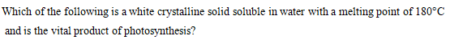

What are electrophiles? विद्युत स्नेही क्याा हैं ?
AEither neutral or negatively charged. या तो तटस्थ या नकारात्मक रूप से आवेशित।
BEither neutral or positively charged. या तो तटस्थ या सकारात्मक आवेश ।
CElectron-rich atom. इलेक्ट्रॉॉन युक्त परमाणु।
DHydroxide and chloride ions. हाइड्रॉॉक्सााइड और क्लोोराइड आयन।
EXPLANATIONCorrect Answer: B
The correct answer is B because it matches the definition: Either neutral or positively charged. या तो तटस्थ या सकारात्मक आवेश । .
Question 74ID: 2622813Page: 452
During the free radical halogenation of methane, some steps are involved. In which step, does a chlorine radical combine with hydrogen in the methane? मीथेन के मुक्त मूलक हैलोजनीकरण के दौरान कुछ चरण शामिल होते हैं। किस चरण में क्लोोरीन रेडिकल मीथेन में हाइड्रोोजन के साथ संयोजित होता है?
AInitiation इनिटिएशन
BFirst propagation पहला प्रसारण
CSecond propagation दूसरा प्रसारण
DTermination समापन
EXPLANATIONCorrect Answer: B
The correct answer is B because it matches the definition: First propagation पहला प्रसारण .
Question 75ID: 2622858Page: 452
Page: 452 Q.No: 75 2622858
AThe substrate सब्सट्रेट
BThe nucleophile न्यूक्लियोफाइल
CNeither the substrate nor the nucleophile न तो सब्सट्रेट और न ही न्यूक्लियोफाइल
DBoth the substrate and the nucleophile सब्सट्रेट और न्यूक्लियोफाइल दोनों
EXPLANATIONCorrect Answer: A
The correct answer is A because it matches the definition: The substrate सब्सट्रेट .
Question 76ID: 2622859Page: 453
Which of the following acts as the leaving group when tertiary alcohol reacts with HX to give an alkyl halide? निम्नलिखित में से कौन सा छोड़ने वाले समूह के रूप में कार्य करता है जब तृतीयक अल्कोोहल एचएक्स के साथ एल्कााइल हलाइड देने के लिए प्रतिक्रिया करता है?
A[Image/Diagram]
B[Image/Diagram]
C[Image/Diagram]
D[Image/Diagram]
EXPLANATIONCorrect Answer: D
The correct answer is D because it matches the definition: [Image/Diagram].
Question 77ID: 2622865Page: 453
Benzyne mechanism is involved in which of the mechanism of second-order nucleophilic substitution reaction? बेंजीन तंत्र दूसरे क्रम के न्यूक्लियोफिलिक प्रतिस्थापन प्रतिक्रिया के किस तंत्र में शामिल है?
AAddition/elimination जोड़/उन्मूलन
BElimination/reduction उन्मूलन/ घटाना
CReduction/addition घटाना/जोड़ना
DElimination/addition उन्मूलन / जोड़ना
EXPLANATIONCorrect Answer: D
The correct answer is D because it matches the definition: Elimination/addition उन्मूलन / जोड़ना .
Question 78ID: 2622866Page: 453
Which of the following compounds have one part named as an alkoxy substituent? निम्नलिखित में से किस यौगिक के एक भाग को एल्कोोक्सीी प्रतिस्थापी के रूप में नामित किया गया है?
AAlcohols अल्कोोहल
BPhenols फिनोल
CEthers containing no other functional groups ईथर जिसमें कोई अन्य कार्यात्मक समूह नहीं है
DEthers containing other functional groups अन्य कार्यात्मक समूहों वाले ईथर
EXPLANATIONCorrect Answer: D
The correct answer is D because it matches the definition: Ethers containing other functional groups अन्य कार्यात्मक समूहों वाले ईथर .
Question 79ID: 2622880Page: 454
According to the phase diagram of sulphur, which option gives the correct information? सल्फर की प्राावस्था आरेख के अनुसार कौन-सा विकल्प सही सूचना देता है?
A[Image/Diagram]
B[Image/Diagram]
C[Image/Diagram]
D[Image/Diagram]
EXPLANATIONCorrect Answer: C
The correct answer is C because it matches the definition: [Image/Diagram].
Question 80ID: 2622881Page: 454
According to the Gibbs phase rule, which of the following is valid?ग गब्स चरण नियम के अनुसार, निम्न में से कौन सा मान्य है?
AIncreasing the number of components increases the number of variables. घटकों की संख्याा बढ़ााने से चरों की संख्याा बढ़ जाती है।
BIncreasing the number of components decreases the number of variables. घटकों की संख्याा बढ़ााने से चरों की संख्याा घट जाती है।
CIncreasing the number of phases decreases the number of equations. चरणों की संख्याा बढ़ााने से समीकरणों की संख्याा घट जाती है।
DIncreasing the number of phases decreases the number of equilibrium conditions. चरणों की संख्याा बढ़ााने से संतुलन स्थितियों की संख्याा घट जाती है।
EXPLANATIONCorrect Answer: A
The correct answer is A because it matches the definition: Increasing the number of components increases the number of variables. घटकों की संख्याा बढ़ााने से चरों की संख्याा बढ़ जाती है। .
Question 81ID: 2622894Page: 455
Which of the following cannot be determined by applying Nernst distribution law? निम्नलिखित में से कौन सा नर्नस्ट वितरण नियम लागू करके निर्धारित नहीं किया जा सकता है?
AThe amount of the solute in the solution. घोल में विलेय की मात्राा।
BThe solubility of the solute in a solvent. एक विलायक में विलेय की घुलनशीलता।
CThe extent of association of the solute in a solvent by the hit and trial method. हिट एंड ट्राायल विधि द्वाारा विलायक में विलेय के जुड़ााव की सीमा।
DThe extent of dissociation of the solute in a solvent by the logarithmic method. लघुगणकीय विधि द्वाारा विलायक में विलेय के पृथक्करण की सीमा।
EXPLANATIONCorrect Answer: A
The correct answer is A because it matches the definition: The amount of the solute in the solution. घोल में विलेय की मात्राा। .
Question 82ID: 2622936Page: 455
Which of the following is an explosive compound of cellulose? निम्नलिखित में से कौन सा सेल्युलोज का विस्फोोटक यौगिक है?
APyroxylin प्य्रोोक्सिलिन
BCellulose trinitrate सेल्युलोज ट्रिनिट्रेट
CCelluloid सिलोलाइड
DCellulose acetate सेलूलोज एसीटेट
EXPLANATIONCorrect Answer: B
The correct answer is B because it matches the definition: Cellulose trinitrate सेल्युलोज ट्रिनिट्रेट .
Question 83ID: 2622951Page: 455
How many three-fold axes of symmetry does a cube have? एक घन में कितने तीन गुना सममिति अक्ष होते हैं?
A4 4
B3 3
C6 6
D9 9
EXPLANATIONCorrect Answer: A
The correct answer is A because it matches the definition: 4 4 .
Question 84ID: 2622952Page: 456
Which of the following is NOT valid according to the law of rational indices? तर्कसंगत सूचकांकों के नियम के अनुसार निम्नलिखित में से कौन सा मान्य नहीं है?
AIntercepts made by a face on the axis cannot be infinity. अक्ष पर किसी फलक द्वाारा बनाए गए अवरोध अनंत नहीं हो सकते।
BIntercepts made by a face on the axis are the same as those of the unit plane. अक्ष पर एक फलक द्वाारा बनाए गए अवरोधन वही होते हैं जो इकाई तल के होते हैं।
CIntercepts made by a face on the axis are the whole number multiples of those of the unit plane. अक्ष पर एक फलक द्वाारा बनाए गए अवरोधन इकाई तल के संपूर्ण संख्याा गुणज होते हैं।
DThe intercept made by a face on the axis parallel to it is infinity. इसके समांतर अक्ष पर एक फलक द्वाारा बनाया गया अवरोध अनंत है।
EXPLANATIONCorrect Answer: A
The correct answer is A because it matches the definition: Intercepts made by a face on the axis cannot be infinity. अक्ष पर किसी फलक द्वाारा बनाए गए अवरोध अनंत नहीं हो सकते। .
Question 85ID: 2622962Page: 456
Which of the following is an example of a first-order homogeneous reaction? निम्नलिखित में से कौन-सा प्रथम कोटि की सजातीय अभिक्रिया का उदाहरण है?
AInversion of cane sugar गन्नाा चीनी का व्युत्क्रम
BHydrolysis of ethyl acetate in an acidic medium एक अम्लीीय माध्यम में एथिल एसीटेट का हाइड्रोोलिसिस
CThermal decomposition of azo-isopropane एज़ोो-आइसोप्रोोपेन का ऊष्मीीय अपघटन
DDecomposition of hydrogen peroxide हाइड्रोोजन पेरोक्सााइड का अपघटन
EXPLANATIONCorrect Answer: C
The correct answer is C because it matches the definition: Thermal decomposition of azo-isopropane एज़ोो-आइसोप्रोोपेन का ऊष्मीीय अपघटन .
Question 86ID: 2622963Page: 456
Which of the following is a second-order reaction taking place in solutions? निम्नलिखित में से कौन सा विलयनों में होने वाली द्वितीय कोटि की अभिक्रिया है?
A[Image/Diagram]
B[Image/Diagram]
CThermal decomposition of acetaldehyde एसीटैल्डिहाइड का थर्मल अपघटन
DSaponification of esters एस्टर का सैपोनिफिकेशन
EXPLANATIONCorrect Answer: D
The correct answer is D because it matches the definition: Saponification of esters एस्टर का सैपोनिफिकेशन .
Question 87ID: 2622978Page: 457
Which of the following actinoid ion is colourless? निम्नलिखित में से कौन-सा ऐक्टिनाइड आयन रंगहीन है?
A[Image/Diagram]
B[Image/Diagram]
C[Image/Diagram]
D[Image/Diagram]
EXPLANATIONCorrect Answer: A
The correct answer is A because it matches the definition: [Image/Diagram].
Question 88ID: 2622979Page: 457
Which element lies between Md and Lr? Md और Lr के बीच कौन सा तत्व है?
ACf Cf
BPu Pu
CEs Es
DNo No
EXPLANATIONCorrect Answer: D
The correct answer is D because it matches the definition: No No .
Question 89ID: 2623019Page: 457
Which of the following is extracted using parting process in metallurgy? धातु विज्ञाान में विभाजन प्रक्रिया का उपयोग करके निम्नलिखित में से कौन सा निकाला जाता है?
ACopper and Zinc कॉपर और जिंक
BMagnesium मैग्नीीशियम
CIron लोहा
DGold and Silver सोना और चांदी
EXPLANATIONCorrect Answer: D
The correct answer is D because it matches the definition: Gold and Silver सोना और चांदी .
Question 90ID: 2623020Page: 458
The temperature in the oxy-hydrogen flames is suitable for low temperature welding and brazing. What is that temperature? ऑक्सीी-हाइड्रोोजन लपटों में तापमान कम तापमान वेल्डिंग और टांकने के लिए उपयुक्त है। वह तापमान क्याा है?
A2000 डिग्रीी फारेनहाइट
B1000 डिग्रीी फारेनहाइट
C4000 डिग्रीी फारेनहाइट
D8000 डिग्रीी फारेनहाइट
EXPLANATIONCorrect Answer: C
The correct answer is C because it matches the definition: 4000 डिग्रीी फारेनहाइट .
Question 91ID: 2623029Page: 458
Which is the key organ that plays a vital role in maintaining Sodium ion equilibrium? वह प्रमुख अंग कौन सा है जो सोडियम आयन संतुलन को बनाए रखने में महत्वपूर्ण भूमिका निभाता है?
ALiver लिवर
BStomach पेट
CKidney गुर्दा
DHeart दिल
EXPLANATIONCorrect Answer: C
The correct answer is C because it matches the definition: Kidney गुर्दा .
Question 92ID: 2623048Page: 458
Which of the following is a type of glycolipids are vital constituents of cell membrane and nervous tissues, especially the brain? निम्नलिखित में से कौन सा एक प्रकार का ग्लााइकोलिपिड है जो कोशिका झिल्लीी और तंत्रिका ऊतकों, विशेषकर मस्तिष्क के महत्वपूर्ण घटक हैं?
AGangliosides गैंग्लियोसाइड्स
BPhospholipids फास्फोोलिपिड्स
CGlycolipids ग्लााइकोलिपिड्स
DLecithin लेसिथिन
EXPLANATIONCorrect Answer: C
The correct answer is C because it matches the definition: Glycolipids ग्लााइकोलिपिड्स .
Question 93ID: 2623049Page: 459
Serine and tyrosine belong to which group containing amino acids? सेरीन और टाइरोसिन अमीनो अम्ल वाले किस समूह से संबंधित हैं?
ACarboxyl कार्बोक्सिल
BHydroxyl हाइड्रोोक्सााइल
CAliphatic एलिफैटिक
DSulphur सल्फर
EXPLANATIONCorrect Answer: B
The correct answer is B because it matches the definition: Hydroxyl हाइड्रोोक्सााइल .
Question 94ID: 2623059Page: 459
Which of the following is not one of the properties of amino acid zwitterions? निम्नलिखित में से कौन सा अमीनो अम्ल ज़्विटरियन्स का एक गुण नहीं है?
AThey are crystalline substances. ये क्रिस्टलीय पदार्थ होते हैं।
BThey are acidic in an aqueous base solution. वे जलीय क्षाार विलयन में अम्लीीय हैं।
CThey are acidic in an aqueous acid solution. वे एक जलीय अम्ल विलयन में अम्लीीय होते हैं।
DThey are insoluble in hydrocarbons. वे हाइड्रोोकार्बन में अघुलनशील हैं।
EXPLANATIONCorrect Answer: C
The correct answer is C because it matches the definition: They are acidic in an aqueous acid solution. वे एक जलीय अम्ल विलयन में अम्लीीय होते हैं। .
Question 95ID: 2623101Page: 460
What is the relation between the rate of flow of a fluid through a cylindrical tube and the given factors? एक बेलनाकार ट्यूब के माध्यम से द्रव के प्रवाह की दर और दिए गए कारकों के बीच क्याा संबंध है?
ADirectly proportional to viscosity विस्कोोसिटी के सीधे आनुपातिक
BDirectly proportional to the tube’s length ट्यूब की लंबाई के सीधे आनुपातिक
CInversely proportional to viscosity विस्कोोसिटी के व्युत्क्रमानुपाती
DInversely proportional to the pressure difference applied over the tube ट्यूब पर लागू दबाव अंतर के व्युत्क्रमानुपाती
EXPLANATIONCorrect Answer: C
The correct answer is C because it matches the definition: Inversely proportional to viscosity विस्कोोसिटी के व्युत्क्रमानुपाती .
Question 96ID: 2623102Page: 460
What is the effect of temperature and pressure on the coefficient of viscosity? ताप और दाब का श्याानता गुणांक पर क्याा प्रभाव पड़ता है?
AProportional to the square root of temperature. तापमान के वर्गमूल के समानुपातिक
BProportional to the square root of pressure. दबाव के वर्गमूल के समानुपाती।
CProportional to the square of pressure. दबाव के वर्ग के समानुपाती।
DIndependent of the temperature. तापमान से स्वतंत्र।
EXPLANATIONCorrect Answer: A
The correct answer is A because it matches the definition: Proportional to the square root of temperature. तापमान के वर्गमूल के समानुपातिक .
Question 97ID: 2623111Page: 460
Which of the following consists of the upper portion of the stalagmometer apparatus? निम्नलिखित में से किसमें स्टैलेग्मोोमीटर उपकरण का ऊपरी भाग होता है?
ACapillary tube कैपिलरी ट्यूब
BBulb बल्ब
CGlass tube ग्लाास ट्यूब
DPinch cock पिंच कॉक
EXPLANATIONCorrect Answer: C
The correct answer is C because it matches the definition: Glass tube ग्लाास ट्यूब .
Question 98ID: 2623112Page: 461
Why the lowest point of the capillary tube is flattened in a stalagmometer apparatus? स्टैलेग्मोोमीटर उपकरण में केशिका नली का निम्नतम बिंदु चपटा क्योंों होता है?
ATo form spherical drops गोलाकार बूँदें बनाने के लिए
BTo make the liquid flow rapidly. तरल प्रवाह को तेजी से बनाने के लिए।
CTo adjust the pressure on the water. पानी पर दबाव को समायोजित करने के लिए।
DTo vary the size of the drops. बूंदों के आकार को बदलने के लिए।
EXPLANATIONCorrect Answer: A
The correct answer is A because it matches the definition: To form spherical drops गोलाकार बूँदें बनाने के लिए .
Question 99ID: 2623126Page: 461
Which of the following laws states that “when light falls on any substance, only that fraction of incident light which is absorbed by the substance can bring about a chemica not produce any such effect?” निम्नलिखित में से कौन सा नियम बताता है कि "जब प्रकाश किसी पदार्थ पर पड़ता है, तो केवल आपतित प्रकाश का वह अंश जो पदार्थ द्वाारा अवशोषित किया जाता है, एक रासायनिक परिवर्तन ला सकता है जो परावर्तित होता है
ALaw of photochemical equivalence फोटोकैमिकल समकक्ष का नियम
BGrothus-Draper law ग्रोोथस-ड्रेेपर नियम
CLambert-Beer law लैम्बर्ट-बीयर नियम
DElectromagnetic radiation विद्युत चुम्बकीय विकिरण
EXPLANATIONCorrect Answer: B
The correct answer is B because it matches the definition: Grothus-Draper law ग्रोोथस-ड्रेेपर नियम .
Question 100ID: 2623141Page: 461
Which of the following may be promoted from the valence band to conduction band in photocatalysis, when light of a suitable wavelength falls on a semiconductor? फोटोकैटलिसिस में निम्नलिखित में से किसे वैलेंस बैंड से कंडक्शन बैंड में प्रचारित किया जा सकता है, जब एक उपयुक्त तरंग दैर्ध्य का प्रकाश अर्धचालक पर पड़ता है?
APhoton फोटॉन
BElectron इलेक्ट्रॉॉन
CNeutron न्यूट्रॉॉन
DOrbitals ऑर्बिटल्स
EXPLANATIONCorrect Answer: B
The correct answer is B because it matches the definition: Electron इलेक्ट्रॉॉन .
Question 41ID: 2622776Page: 606
What is the ground state electronic configuration of a Boron atom? बोरॉन परमाणु का मूल अवस्था इलेक्ट्रॉॉनिक विन्याास क्याा है?
A[Image/Diagram]
B[Image/Diagram]
C[Image/Diagram]
D[Image/Diagram]
EXPLANATIONCorrect Answer: D
The correct answer is D because it matches the definition: [Image/Diagram].
Question 42ID: 2622788Page: 607
According to the rules proposed by Fajan, what is the rule to determine the polarisation extent of an anion? फैजन द्वाारा प्रतिपादित नियमों के अनुसार ऋणायन की ध्रुवण सीमा ज्ञाात करने का नियम क्याा है ?
ALarge lowly charged cations have lesser polarising effects than small highly charged cations, on anions. बड़े कम आवेशित धनायनों का आयनों पर छोटे उच्च आवेशित धनायनों की तुलना में कम ध्रुवीकरण प्रभाव होता है।
BThe greater the polarisation, the lesser the induced covalency. ध्रुवीकरण जितना अधिक होगा, प्रेरित सहसंयोजकता उतनी ही कम होगी।
CThe larger the anion charge, the lesser its polarisability. ऋणायन आवेश जितना बड़ाा होगा, उसकी ध्रुवीकरण क्षमता उतनी ही कम होगी।
DCations with pseudo-noble gas configurations have lower polarising power than cations with noble gas configurations. अधिक गैस विन्याास वाले उद्धरणों में अधिक गैस विन्याास वाले उद्धरणों की तुलना में कम ध्रुवीकरण शक्ति होती है।
EXPLANATIONCorrect Answer: A
The correct answer is A because it matches the definition: Large lowly charged cations have lesser polarising effects than small highly charged cations, on anions. बड़े कम आवेशित धनायनों का आयनों पर छोटे उच्च आवेशित धनायनों की तुलना में कम ध्रुवीकरण प्रभाव होता है। .
Question 43ID: 2622789Page: 607
Which of the following is NOT a valid point of the valence bond approach? निम्नलिखित में से कौन सा वैलेंस बॉन्ड दृष्टिकोण का वैध बिंदु नहीं है?
AAtoms lose their identity in the molecule. अणु में परमाणु अपनी अस्तित्व खो देते हैं।
BValence electrons interact with each other to form a bond when atoms approach. परमाणुओं के पास आने पर बंधन बनाने के लिए वैलेंस इलेक्ट्रॉॉन एक दूसरे के साथ बातचीत करते हैं।
CValence electrons from each bonded atom lose their identity while forming a bond. बंधन बनाते समय प्रत्येक बंधित परमाणु से संयोजी इलेक्ट्रॉॉन अपनी अस्तित्व खो देते हैं।
DElectron exchange takes place when a bond is formed between two atoms to keep it stable. इलेक्ट्रॉॉन विनिमय तब होता है जब इसे स्थिर रखने के लिए दो परमाणुओं के बीच एक बंधन बनता है।
EXPLANATIONCorrect Answer: A
The correct answer is A because it matches the definition: Atoms lose their identity in the molecule. अणु में परमाणु अपनी अस्तित्व खो देते हैं। .
Question 44ID: 2622803Page: 607
Which of the following have a strong tendency to become paired and they are paramagnetic in nature? निम्नलिखित में से किसकी जोड़ीी बनने की प्रबल प्रवृत्ति है और वे प्रकृति में अनुचुंबकीय हैं?
ACarbocations कार्बोकेशन
BCarbanions कार्बैनियन
CFree radicals मुक्त कण
DCarbenes कार्बीन
EXPLANATIONCorrect Answer: C
The correct answer is C because it matches the definition: Free radicals मुक्त कण .
Question 45ID: 2622814Page: 608
How the addition of bromine to a sample indicates a double bond? किसी नमूने में ब्रोोमीन का योग डबल बंधन को कैसे दर्शाता है?
AThe colour of the sample changes. नमूने का रंग बदल जाता है।
B[Image/Diagram]
CThe solution gives a pungent smell. विलयन एक तीखी गंध देता है।
D[Image/Diagram]
EXPLANATIONCorrect Answer: B
The correct answer is B because it matches the definition: [Image/Diagram].
Question 46ID: 2622860Page: 608
In which of the elimination mechanisms, the C-H bond breaks first to give a carbanion intermediate that loses X- to form the alkene? किस विलोपन क्रियाविधि में, C-H आबंध पहले टूटता है जिससे एक कारबोनियन मध्यवर्ती बनता है जो X- खो देता है और एल्कीीन बनाता है?
AE1 E1
BE2 E2
CE1cB E1cB
DE2cB E2cB
EXPLANATIONCorrect Answer: C
The correct answer is C because it matches the definition: E1cB E1cB .
Question 47ID: 2622867Page: 608
Which of the following is reduced to give secondary alcohols? द्वितीयक अल्कोोहल देने के लिए निम्न में से कौन कम किया जाता है?
AAldehydes एल्डीीहाइड
BKetones केटोन्स
CEsters एस्टर
DCarboxylic acids कार्बोक्जिलिक अम्ल
EXPLANATIONCorrect Answer: B
The correct answer is B because it matches the definition: Ketones केटोन्स .
Question 48ID: 2622882Page: 609
How many phases are there in a system consisting of two solids and a gas? दो ठोस और एक गैस वाली प्रणाली में कितने चरण होते हैं?
A1 1
B2 2
C3 3
D4 4
EXPLANATIONCorrect Answer: C
The correct answer is C because it matches the definition: 3 3 .
Question 49ID: 2622953Page: 609
If we take the example of a cube, which of the following represents a unit plane using the concept of Miller indices? यदि हम एक घन का उदाहरण लेते हैं, तो मिलर सूचकांकों की अवधारणा का उपयोग करते हुए निम्नलिखित में से कौन सा एक इकाई तल का प्रतिनिधित्व करता है?
A110 110
B101 101
C111 111
D100 100
EXPLANATIONCorrect Answer: C
The correct answer is C because it matches the definition: 111 111 .
Question 50ID: 2622964Page: 609
The decomposition of hydrogen iodide on the surface of the gold is an example of which type of reaction? सोने की सतह पर हाइड्रोोजन आयोडाइड का अपघटन किस प्रकार की प्रतिक्रिया का उदाहरण है?
AFirst order reaction प्रथम क्रम की प्रतिक्रिया
BThird order reaction तीसरे क्रम की प्रतिक्रिया
CZero order reaction शून्य क्रम प्रतिक्रिया
DSecond order reaction द्वितीय क्रम की अभिक्रिया
EXPLANATIONCorrect Answer: C
The correct answer is C because it matches the definition: Zero order reaction शून्य क्रम प्रतिक्रिया .
Question 51ID: 2622980Page: 610
Which of the following options does NOT follow the (IUPAC) International Union of Pure and Applied Chemistry system of nomenclature of coordination compounds? निम्न में से कौन सा विकल्प उपसहसंयोजन यौगिकों के नामकरण की (IUPAC) अंतरराष्ट्रीीय शुद्ध का संघ व अनुप्रयुक्त रसायन विज्ञाान प्रणाली का पालन नहीं करता है?
AThe positive ions follow the negative ions. धनात्मक आयन ऋणात्मक आयनों का अनुसरण करते हैं।
BNegative ligand names end in -o and positive ligand names end in -ium. ऋणात्मक लिगन्ड नाम -o में समाप्त होते हैं और धनात्मक लिगैंड नाम -ium में समाप्त होते हैं।
CAbbreviations are used for complicated names. जटिल नामों के लिए संक्षिप्तााक्षरों का प्रयोग किया जाता है।
DNon-ionic complexes are given a one-word name. गैर-आयनिक संकुलों को एक ही पद नाम दिया गया है।
EXPLANATIONCorrect Answer: A
The correct answer is A because it matches the definition: The positive ions follow the negative ions. धनात्मक आयन ऋणात्मक आयनों का अनुसरण करते हैं। .
Question 52ID: 2623021Page: 610
Which of the following gives out garlic like odour at commercial purity? निम्नलिखित में से कौन व्याावसायिक शुद्धता पर लहसुन जैसी गंध देता है?
AFluorine फ्लोोरीन
BChlorine क्लोोरीन
CNeon नियॉन
DAcetylene एसिटिलीन
EXPLANATIONCorrect Answer: D
The correct answer is D because it matches the definition: Acetylene एसिटिलीन .
Question 53ID: 2623030Page: 610
In which type of organometallic compounds, there occurs a large electronegativity difference between the s-block elements and carbon atom of organic part? किस प्रकार के ऑर्गेनोमेटैलिक यौगिकों में एस-ब्लॉॉक तत्वोंों और कार्बनिक भाग के कार्बन परमाणु के बीच एक बड़ाा विद्युतीय अंतर होता है?
ASimple सरल
BMixed मिश्रित
CIonic आयनिक
D[Image/Diagram]
EXPLANATIONCorrect Answer: C
The correct answer is C because it matches the definition: Ionic आयनिक .
Question 54ID: 2623050Page: 611
Which type of amino acids are known as hydrophobic? किस प्रकार के अमीनो अम्ल को हाइड्रोोफोबिक के रूप में जाना जाता है?
ANon-polar amino acids गैर-ध्रुवीय अमीनो अम्ल
BKetogenic amino acids केटोजेनिक अमीनो अम्ल
CGlycogenic amino acids ग्लााइकोजेनिक अमीनो अम्ल
DPolar amino acids ध्रुवीय अमीनो अम्ल
EXPLANATIONCorrect Answer: A
The correct answer is A because it matches the definition: Non-polar amino acids गैर-ध्रुवीय अमीनो अम्ल .
Question 55ID: 2623051Page: 611
Which of the following refers to a solid-state battery in which the solid electrolyte allows the passage of ions but not electrons as it uses a polymer? निम्नलिखित में से कौन सा एक ठोस-अवस्था बैटरी को संदर्भित करता है जिसमें ठोस इलेक्ट्रोोलाइट आयनों के पारित होने की अनुमति देता है लेकिन इलेक्ट्रॉॉनों की नहीं क्योंोंकि यह एक बहुलक का उपयोग करता है?
AEdison battery एडिसन बैटरी
BNickel-Cadmium battery निकेल-कैडमियम बैटरी
CLithium battery लिथियम बैटरी
DAluminium-Air battery एल्यूमीनियम-एयर बैटरी
EXPLANATIONCorrect Answer: C
The correct answer is C because it matches the definition: Lithium battery लिथियम बैटरी .
Question 56ID: 2623060Page: 611
What is the isoelectric point for the amino acids with an acidic side chain? अम्लीीय पार्श्व श्रृंृंखला वाले अमीनो अम्लोंों के लिए समविद्युत बिंदु क्याा है?
AAverage of the two lowest acid dissociation constants. दो सबसे कम अम्ल पृथक्करण स्थिरांक का औसत।
BAverage of the two highest acid dissociation constants. दो उच्चतम अम्ल पृथक्करण स्थिरांक का औसत।
CAverage of the two acid dissociation constants. दो अम्ल पृथक्करण स्थिरांक का औसत।
DThe value of the acid dissociation constant of the side chain. पार्श्व श्रृंृंखला के अम्ल पृथक्करण स्थिरांक का मान।
EXPLANATIONCorrect Answer: A
The correct answer is A because it matches the definition: Average of the two lowest acid dissociation constants. दो सबसे कम अम्ल पृथक्करण स्थिरांक का औसत। .
Question 57ID: 2623103Page: 612
What is the effect of an increase in temperature on the curve interpreting Maxwell's distribution of velocities? मैक्सवेल के वेगों के वितरण की व्यााख्याा करने वाले वक्र पर तापमान में वृद्धि का क्याा प्रभाव पड़ता है?
AThe peak of the curve shifts forward. वक्र का शिखर आगे खिसक जाता है
BThe peak of the curve shifts backward. वक्र का शिखर पीछे की ओर खिसक जाता है
CThe peak of the curve is sharpened. वक्र का शिखर नुकीला होता है
DThe peak of the curve shifts upward. वक्र का शिखर ऊपर की ओर खिसकता है।
EXPLANATIONCorrect Answer: A
The correct answer is A because it matches the definition: The peak of the curve shifts forward. वक्र का शिखर आगे खिसक जाता है .
Question 58ID: 2623113Page: 612
Which of the following correctly defines the viscosity of a liquid? निम्नलिखित में से कौन-सा द्रव की श्याानता को सही ढंग से परिभाषित करता है?
AForce of friction between two layers of a liquid किसी द्रव की दो परतों के बीच लगने वाला घर्षण बल
BThe velocity of the liquid at the centre of the tube ट्यूब के केंद्र में द्रव का वेग
CThe velocity of the liquid near the walls of the tube ट्यूब की दीवारों के पास द्रव का वेग
DForce of attraction between two layers of a liquid द्रव की दो परतों के बीच आकर्षण बल
EXPLANATIONCorrect Answer: A
The correct answer is A because it matches the definition: Force of friction between two layers of a liquid किसी द्रव की दो परतों के बीच लगने वाला घर्षण बल .
Question 59ID: 2623127Page: 613
निम्नलिखित में से कौन सा 180 डिग्रीी सेल्सियस के गलनांक के साथ पानी में घुलनशील सफेद क्रिस्टलीय ठोस है और प्रकाश संश्लेषण का महत्वपूर्ण उत्पााद है?

ASucrose सुक्रोोज
BMaltase माल्टेज
CFructose फ्रुुक्टोोज
DAmylase एमाइलेज
EXPLANATIONCorrect Answer: A
The correct answer is A because it matches the definition: Sucrose सुक्रोोज .
Question 60ID: 2623142Page: 613
Which of the following process is used for removal of inorganics that consists of passing the water successively over a solid cation exchanger and a solid anion exchanger, which replace cations and anions by hydrogen ion and hydroxide ion, respectively? निम्नलिखित में से कौन सी प्रक्रिया का उपयोग अकार्बनिक को हटाने के लिए किया जाता है जिसमें एक ठोस केशन एक्सचेंजर और एक ठोस आयन एक्सचेंजर के ऊपर से क्रमिक रूप से पानी गुजरना होता है, जो क्रमशः हाइड्रोोजन आयन और हाइड्रॉॉक्सााइड आयन द्वाारा केशन और आयनों को प्रतिस्थापित करता है?
AElectrodialysis इलेक्ट्रोोडायलिसिस
BIon Exchange आयन एक्सचेंज
CReverse Osmosis रिवर्स ऑस्मोोसिस
DDissolved Air flotation घुलित एयर फ्लोोटेशन
EXPLANATIONCorrect Answer: B
The correct answer is B because it matches the definition: Ion Exchange आयन एक्सचेंज .
Question 35ID: 2622777Page: 754
Which of the following correlations, along with its exchange energy of stabilization, are the basis of the special stability of half-filled subshells? निम्नलिखित में से कौन सा सहसंबंध और उसके स्थिरीकरण की विनिमय ऊर्जा, आधे भरे उपकोश की विशेष स्थिरता का आधार है?
ABinding correlation बंधन सहसंबंध
BSpin correlation स्पिन सहसंबंध
CCharge correlation चार्ज सहसंबंध
DEnergy correlation ऊर्जा सहसंबंध
EXPLANATIONCorrect Answer: B
The correct answer is B because it matches the definition: Spin correlation स्पिन सहसंबंध .
Question 36ID: 2622778Page: 754
Which of the following is true for two electrons in the same orbital according to Pauli’s exclusion principle? पाउली के अपवर्जन सिद्धांांत के अनुसार एक ही कक्षाा में दो इलेक्ट्रॉॉनों के लिए निम्नलिखित में से कौन सा सत्य है?
AThey will have identical n, l, and m, and must have parallel spins उनके समान n, 1, और m होंगे, और समानांतर घुमाव होने चाहिए
BThey will have different n, l, and m, but must have parallel spins उनके भिन्न n, 1, और m होंगे, लेकिन समानांतर घुमाव होने चाहिए
CThey will have identical n, l, and m, but must have opposite spins उनके समान n, 1 और m होंगे, लेकिन विपरीत चक्रण होने चाहिए
DThey will have different n, l, and m, and must have opposite spins उनके भिन्न n, 1, और m होंगे, और विपरीत चक्रण होने चाहिए
EXPLANATIONCorrect Answer: C
The correct answer is C because it matches the definition: They will have identical n, l, and m, but must have opposite spins उनके समान n, 1 और m होंगे, लेकिन विपरीत चक्रण होने चाहिए .